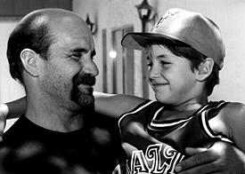

|
||||
|
|
Falsely Accused David
Abernathie spent eight By Nancy Gott
Here's how it happened "If you're black or poor and you get arrested, you'll do time," says David Abernathie of North Las Vegas. Abernathie's skepticism about the system is justified. Accused, arrested, then convicted and sentenced for a crime he didn't commit, Abernathie spent eight years in prison, moving from Indian Springs to Ely State Prison to Indian Springs to Jean to Indian Springs to Lovelock and back to Jean. Released from the Southern Nevada Correctional Center in May, Abernathie is ready to tell his story--the story of the criminal justice system in Nevada, and how its flaws robbed him of eight years of his life. 1988
|
||||||||||||
|  |
| David Abernathie reunited with his son after having missed eight years of the boy's life. Photo by Gerald Villadiego. |
Unemployed since leaving Edwards, Abernathie stayed home and took care of his infant son David while his wife, Sharon, worked to support the family.
The birth of his first child in 1989 transformed Abernathie, who was often seen pushing a stroller through the neighborhood.
"Dave changed after the baby was born," says Rebecca Temple, Abernathie's mother-in-law. "The change was astounding."
But Abernathie's stint as stay-at-home dad was cut short in February 1990, when he was arrested, thrown in jail and charged with: 1) sexual assault with a minor under fourteen years of age; 2) lewdness with a minor; and 3) sexual assault with the use of a deadly weapon. His former employer, Frank Edwards, was charged as well.
"I thought the charges would be dropped," says Abernathie, who was still on parole at the time for a previous attempted grand larceny conviction. Since he was innocent and there was no parole hold on him at the time of his arrest, he didn't think he'd be sent back to prison.
On February 28, 1990, Abernathie and Edwards appeared before Justice of the Peace Daniel Ahlstrom at a preliminary hearing. Both defendants were represented by court-appointed counsel. Horrified, Abernathie listened as the alleged victim, Brandi Garrett, told a garish tale about what she claimed happened on December 28, 1988.
This is the story Brandi told police: After Abernathie and Edwards smoked what she believed was rock cocaine, Abernathie grabbed her and held her down while Edwards removed her panties and had sexual intercourse with her. According to Brandi, Abernathie forced her to perform oral copulation on him as Edwards looked on. When Brandi was finished with Abernathie, Edwards forced her to perform oral copulation on him as well. During the attack, Abernathie supposedly brandished a knife and threatened Brandi. The attack was allegedly witnessed by Brandi's brothers.
On March 15, 1990, Abernathie and co-defendant Edwards were arraigned on sexual assault and lewdness charges. Both men were ordered held in custody until the date of trial, May 7, 1990.
Edwards retained a private attorney, James E. Smith, who filed a motion for the victim, Brandi Garrett, to undergo independent psychiatric evaluation. In the meantime, the District Attorney's office offered Abernathie a couple of deals:
1) If he testified against the co-defendant, he could get off for a 2-10 year sentence; or
2) He could opt for a 1-10 year sentence without testifying if he pled guilty to all charges (with the sexual assault with a deadly weapon charge dropped).
If he accepted neither deal, the D.A. threatened him with habitual criminal enhancement.
Abernathie did not bow to the D.A.'s threats, however.
"Since the crime never happened, there was nothing to testify to," says Abernathie. "I know the Judge and the District Attorney both knew I was innocent."
Abernathie's confidence proved premature; by May 3, 1990, Edwards had withdrawn his "not guilty" plea and pled guilty to lewdness with a minor. All other charges against Edwards were dropped. The Court accepted the plea; the court date was vacated and reset for May 14, 1990.
And Brandi Garrett was not interviewed by an independent psychologist.
|
Not Just a Fluke How Many Innocent Citizens Really Are in Prison? It would be nice to think that the Abernathie case is an anomaly, an occasional mistake that's bound to happen. But before jumping to conclusions about the efficacy of the criminal justice system, there are a few sobering statistics that should give us all pause. * In 1970, the prison population in the United States hovered around 200,000. In the intervening years, there has been a eight-fold increase in incarceration rates. * Today, 1.7 million Americans live behind bars. The prison census rises 7-10 percent every year--despite a drop in violent crime rates. * African-American males are incarcerated at a rate seven times higher than that of white males. * 96 percent of inmates are men. * 6 million Americans are on probation. * 10 million Americans are admitted to jail each year. * One out of four people released eventually return to prison. * Private corporations now build and operate prisons; Correctional Corporation of America (CCA) stock is traded on the New York Stock Exchange. "Prisons are being filled as fast as we can build them," Michael Murphy, a prison psychologist in Massachusetts. "They are the secret fortresses where, year after year, we dump everything we call 'evil' and slam the door." According to a local attorney who asked to not be named, many people are subjected to incompetent counsel. "Folks are being terribly represented. Many attorneys simply don't care. They don't like their clients; they want the cases to be over. Scared and witless, many people will accept a plea bargain and waive their rights. "It doesn't matter if it's an attorney you've retained or a public defender," says the attorney, who is currently working on some pro bono cases for men who were wrongfully convicted, "when people are ignorant about the judicial system, they are at the mercy of their attorneys." --N.G. |
At 10 o'clock sharp on the morning of May, 14, 1990, David Abernathie and his attorney Robert Beckett listened as Deputy District Attorney Thomas Moreo made his opening statement in Department VII of District Court before the Honorable Carl J. Christensen, District Judge. Moreo argued that the evidence would show that in the early part of January 1989, Brandi and Gary Garrett confronted their mother, Martha Edwards, and told her what they claimed had happened in December. As a consequence of hearing her children's horrific story, she fled to Southern California with her children in tow. There she contacted police who subsequently investigated the alleged incident at the request of Metro.
Moreo told the jury that there would be no physical evidence of the sort usually presented in such trials. The only evidence that the State would present would be from the witness stand.
The State's first witness was Brandi Garrett. After describing in detail the alleged sexual assault, Brandi testified that Abernathie threatened to kill her.
"Did you actually believe that Mr. Abernathie would kill you?" asked Moreo.
"Yes. I just figured someone sick enough to do that is someone who would be sick enough to kill someone."
During cross-examination, Beckett asked Brandi if she knew the difference between telling the truth and telling a lie; she replied that she knew the difference and that she was telling the truth. Beckett continued querying Brandi about the difference between lying and telling the truth until Moreo objected.
Beckett's line of questioning revealed several inconsistencies in Brandi's story--such as the fact that at the preliminary hearing, she'd testified that Edwards ejaculated in her mouth. However, during the trial she testified that he did not ejaculate. Likewise, during the trial she tesitifed that Abernathie did not ejaculate during the assault, but in her statement to Monrovia (California) police, she claimed he had ejaculated.
Within hours of the start of the trial, it was clear that her testimony was riddled with inconsistencies.
During the proceedings the judge interrupted Beckett during the cross-examination of Brandi, to Abernathie's detriment.
"...I'm going to caution the defendant. I don't want you to look at the witness in a menacing way and shaking your head 'yes' or 'no' anymore."
Abernathie apologized.
This cautioning helped brand Abernathie as guilty in the eyes of the jury--and he'd pay for that dearly when the time came for a verdict.
Ph.D. psychologist Donna S. Mognett had counseled Brandi in California in her adolescent group.
"In the beginning she could hardly participate in group," testified Mognett. "She sat and cried and trembled. Toward the end of group she could talk a little bit about what happened to her and what was happening to her at the time. She was having what we commonly refer to as flashbacks."
According to Mognett, Brandi had the symptoms of post-traumatic stress syndrome, a common diagnosis for rape victims. After seeing her, she made a report to social worker Barbara Jenkins, in which she revealed that she believed that Brandi had been raped. Moreover, she believed that Brandi was still in danger, as her "therapy was sporadic" and her "mom was talking about getting back together with Frank." Brandi had suffered two breakdowns and had been in the hospital twice, once in April and once and August; Mognett believed that were Brandi exposed to Frank again, "she could not take much more."
Jenkins, a California social worker with 22 years' experience working with abused children, confirmed Mognett's appraisal, adding that Brandi had described to her several incidents in which her stepfather Frank Edwards had made passes at her, kissed her on the neck, fondled her and forced her to have intercourse with him.
Falsely
Accused, part two: Click Here